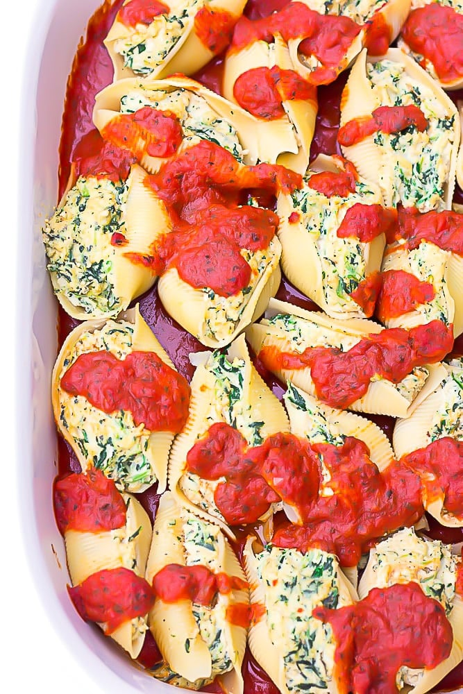

Vegan Stuffed Jumbo Shells

Description
These Vegan Stuffed Jumbo Shells are filled
with an absolutely amazing spinach ricotta that
will not have you missing the dairy at all! Topped
with marinara and just brimming with flavour.
Your guests will be coming back for seconds,
vegan and non-vegan alike!
Prep: 10 mins Cook:
35 mins Servings: 8 servings
Ingredients
- (1) 12-ounce package jumbo shells
- (1) 26-ounce jar marinara sauce (about
3 cups)
- 2 cups raw cashews
- (1) 14-ounce firm tofu, drained
from package
- 1/2 cup nutritional yeast
- 1/4 cup fresh lemon juice (about
1 large lemon)
- 1/4 cup water
- 1 1/2 teaspoons salt
- 6-8 leaves fresh basil (or 2 teaspoons
dried)
- 2-3 sprigs fresh oregano, removed
from sprigs (or 2 teaspoons dried)
- 1 teaspoon garlic powder
- (1) 10-ounce package chopped frozen spinach,
thawed (or 2-3 cups fresh)